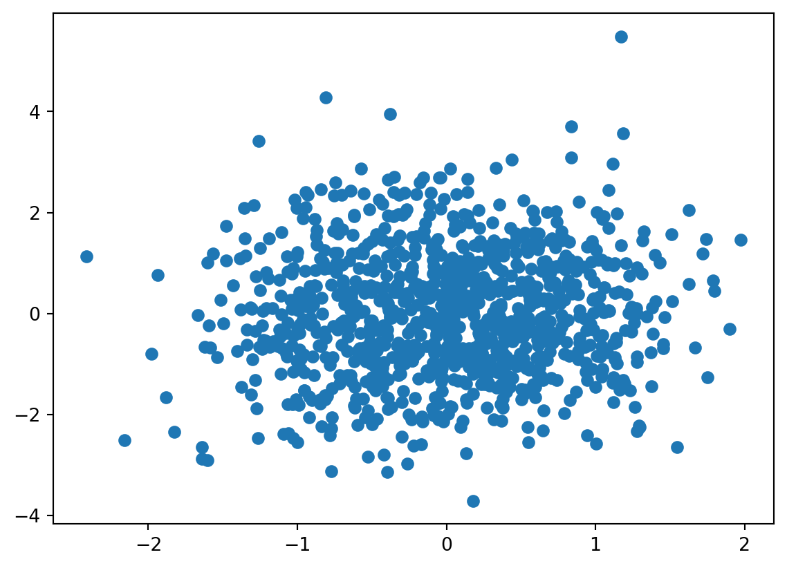
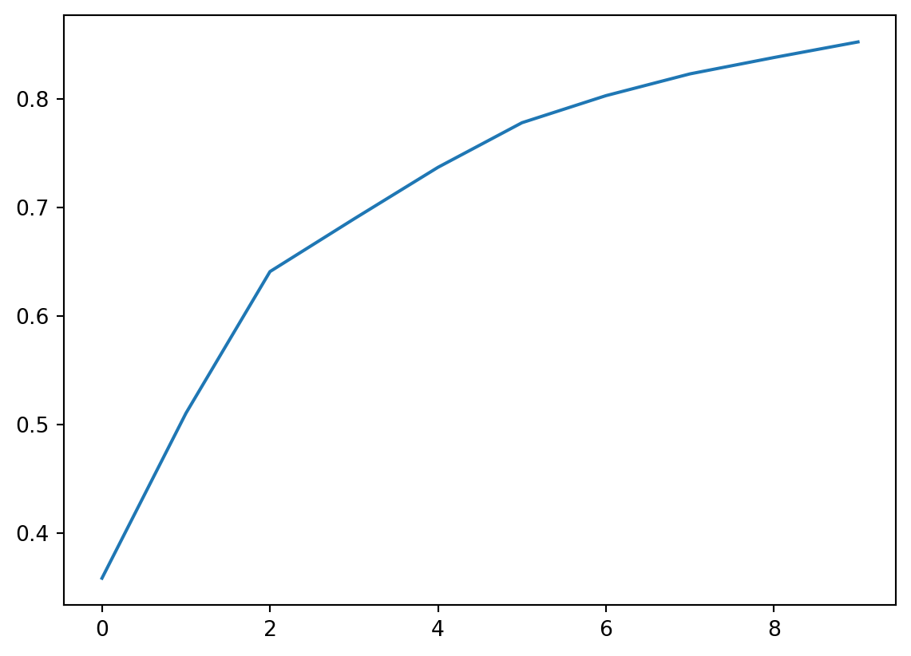

import numpy as np
import matplotlib.pyplot as plt
import numpy.linalg as la
from sklearn.decomposition import PCA
import urllib.request
import PIL
import numpy as np
import torch
import torch.nn as nn
import torch.nn.functional as F
from torch.utils.data import TensorDataset, DataLoader
import torchvision
import torchvision.transforms as transforms11 Unsupervised learning
11.1 PCA
Let \(\{X_i\}\) for \(i=1,\ldots,n\) be \(p\) random vectors with means \((0,\ldots,0)^t\) and variance matrix \(\Sigma\). Consider finding \(v_1\), a \(p\) dimensional vector with \(||v_1|| = 1\) so that \(v_1^t \Sigma v_1\) is maximized. Notice this is equivalent to saying we want to maximize \(\mathrm{Var}( X_i^t V_1)\). The well known solution to this equation is that \(v_1\) is the first eigenvector of \(\Sigma\) and \(\lambda_1 = \mathrm{Var}( X_i^t V_1)\) is the associated eigenvalue. If \(\Sigma = V^t \Lambda V\) is the eigenvalue decomposition of where \(V\) are the eigenvectors and \(\Lambda\) is a diagonal matrix of the eigenvalues ordered from greatest to least, then \(v_1\) corresponds to the first column of \(V\) and \(\lambda_1\) corresponds to the first element of \(\Lambda\). If one then finds \(v_k\) as the vector maximizing \(v_k^t \Sigma v_k\) so that \(v_k^t v_{k'} = I(k=k')\), then the \(v_k\) are the columns of \(V\) and \(v_k^t \Sigma v_k = \lambda_k\) are the eigenvalues.
Notice:
- \(V \Sigma V^t = \Lambda\) (i.e. \(V\) diagonalizess \(\Sigma\))
- \(\mbox{Trace}(\Sigma) = \mbox{Trace}(\Sigma V^t V) = \mbox{Trace}(V \Sigma V^t) = \sum \lambda_k\) (i.e. the total variability is the sum of the eigenvalues)
- Since \(V^t V = I\), \(V\) is a rotation matrix. Thus, \(V\) rotates \(X_i\) in such a way that to maximize variability in the first dimension, then the second dimensions …
- \(\mbox{Cov}(X_i^t v_k, x_i^t v_{k'} )= \mbox{Cov}(X_i^t v_k, x_i^t v_{k'} ) v_k^t \mbox{Cov}(x_i, x_i^t) v_{k'} = v_k^t V v_{k'} = 0\) if \(k\neq k'\)
- Another representation of \(\Sigma\) is \(\sum_{k=1}^p \lambda_i v_k v_k^t\) by simply rewriting the matrix algebra of \(V \Lambda V^t\).
- The variables \(U_i = V X_i\) then: have uncorrelated elements (\(\mbox{Cov}(U_{ik}, U_{ik'}) = 0\) for \(k\neq k'\) by property 5), have the same total variability as the elements of \(X_i\) (\(\sum_k \mbox{Var}(U_{ik}) = \sum_k \lambda_k = \sum_k \mbox{Var}(X_{ik})\) by property 2), are a rotation of the \(X_i\), are ordered so that \(U_{i1}\) has the greatest amount of variability and so on.
Notation:
- The \(\lambda_k\) are simply called the eigenvalues or principal components variation.
- \(U_{ik} = X_i^t v_k\) is called the principal component scores.
- The \(v_k\) are called the principal component loadings or weights, with \(v_1\) being called the first principal component and so on.
Statistical properties
- \(E[U_{ik}]=0\)
- \(\mbox{Var}(U_{ik}) = \lambda_k\)
- \(\mbox{Cov}(U_{ik}, U_{ik'}) = 0\) if \(k\neq k'\)
- \(\sum_{k=1}^p \mbox{Var}(U_{ik}) = \mbox{Trace}(\Sigma)\).
- \(\prod_{k=1}^p \mbox{Var}(U_{ik}) = \mbox{Det}(\Sigma)\)
11.1.1 Sample PCA
Of course, we’re describing PCA as a conceptual process. We realize \(n\) \(p\) dimensional vectors \(x_1\) to \(x_n\), typically organized in \(X\) a \(n\times p\) matrix. If \(X\) is not mean 0, we typically demean it by calculating \((I- J(J^t J)^{-1} J') X\) where \(J\) is a vector of ones. Assume this is done. Then \(\frac{1}{n-1} X^t X = \hat \Sigma\). Thus, our sample PCA is obtained via the eigenvalue decomposition \(\hat \Sigma = \hat V \hat \Lambda \hat V^t\) and our principal components obtained as $ X V$.
We can relate PCA to the SVD as follows. Let \(\frac{1}{\sqrt{n-1}} X = \hat U \sqrt{\hat \Lambda} \hat V^t\) be the SVD of the scaled version of \(X\). Then note that \[ \hat \Sigma = \frac{1}{n-1} X^t X = \hat V \hat \Lambda \hat V^t \] yields the sample covariance matrix eigenvalue decomposition.
11.1.2 PCA with a large dimension
Consider the case where one of \(n\) or \(p\) is large. Let’s assume \(n\) is large. Then \[ \frac{1}{n-1} X^t X = \frac{1}{n-1} \sum_i x_i x_i^t \] As we learned in the chapter on HDF5, we can do sums like these without loading the entirety of \(X\) into memory. Thus, in this case, we can calculate the eigenvectors using only the small dimension. If, on the other hand, \(p\) is large and \(n\) is smaller, then we can calculate the eigenvalue decomposition of \[ \frac{1}{n-1} X X^t = \hat U \hat \Lambda \hat U^t. \] In either case, whether \(U\) or \(V\) is easier to get, we can then obtain the other via vectorized multiplication.
11.1.3 Simple example
n = 1000
mu = (0, 0)
Sigma = np.matrix([[1, .5], [.5, 1]])
X = np.random.multivariate_normal( mean = mu, cov = Sigma, size = n)
plt.scatter(X[:,0], X[:,1])<matplotlib.collections.PathCollection at 0x7c35a4745d80>
X = X - X.mean(0)
print(X.mean(0))
Sigma_hat = np.matmul(np.transpose(X), X) / (n-1)
Sigma_hat[ 2.73669976e-17 -2.66453526e-18]array([[1.09203671, 0.56675734],
[0.56675734, 1.06592638]])evd = la.eig(Sigma_hat)
lambda_ = evd[0]
v_hat = evd[1]
u_hat = np.matmul(X, np.transpose(v_hat))
plt.scatter(u_hat[:,0], u_hat[:,1])<matplotlib.collections.PathCollection at 0x7c35a49950f0>
Fit using scikitlearn’s function
pca = PCA(n_components = 2).fit(X)
print(pca.explained_variance_)
print(lambda_ )[1.64588923 0.51207386]
[1.64588923 0.51207386]u_hat2 = pca.transform(X)
plt.subplot(2, 2, 1)
plt.scatter(u_hat2[:,0], u_hat2[:,1])
plt.subplot(2, 2, 2)
plt.scatter(u_hat2[:,0], u_hat[:,0])
plt.subplot(2, 2, 3)
plt.scatter(u_hat2[:,1], u_hat[:,1])<matplotlib.collections.PathCollection at 0x7c35a4877670>
11.1.4 Example
Let’s consider the melanoma dataset that we looked at before. First we read in the data as we have done before so we don’t show that code.
Using downloaded and verified file: /home/bcaffo/.medmnist/dermamnist.npz
Using downloaded and verified file: /home/bcaffo/.medmnist/dermamnist.npz
Using downloaded and verified file: /home/bcaffo/.medmnist/dermamnist.npzNext, let’s get the data from the torch dataloader format back into an image array and a matrix with the image part (28, 28, 3) vectorized.
def loader_to_array(dataloader):
## Read one iteration to get data
test_input, test_target = iter(dataloader).next()
## Total number of training images
n = np.sum([inputs.shape[0] for inputs, targets in dataloader])
## The dimensions of the images
imgdim = (test_input.shape[2], test_input.shape[3])
images = np.empty( (n, imgdim[0], imgdim[1], 3))
## Read the data from the data loader into our numpy array
idx = 0
for inputs, targets in dataloader:
inputs = inputs.detach().numpy()
for j in range(inputs.shape[0]):
img = inputs[j,:,:,:]
## get it out of pytorch format
img = np.transpose(img, (1, 2, 0))
images[idx,:,:,:] = img
idx += 1
matrix = images.reshape(n, 3 * np.prod(imgdim))
return images, matrix
train_images, train_matrix = loader_to_array(train_loader)
test_images, test_matrix = loader_to_array(test_loader)
## Demean the matrices
train_mean = train_matrix.mean(0)
train_matrix = train_matrix - train_mean
test_mean = test_matrix.mean(0)
test_matrix = test_matrix - test_meanNow let’s actually perform PCA using scikitlearn. We’ll plot the eigenvalues divided by their sums, \(\lambda_k / \sum_{k'} \lambda_{k'}\). This is called a scree plot.
from sklearn.decomposition import PCA
n_comp = 10
pca = PCA(n_components = n_comp).fit(train_matrix)
plt.plot(pca.explained_variance_ratio_)
Often this is done by plotting the cummulative sum so that you can visualize how much variance is explained by including the top \(k\) components. Here I fit 10 components and they explain 85% of the variation.
plt.plot(np.cumsum(pca.explained_variance_ratio_))
Let’s project our testing data onto the principal component basis created by our training data and see how it does. Let \(X_{training} = U \Lambda^{1/2} V^t\) is the SVD of our training data. Then, we can convert ths scores, \(U\) back to \(X_{training}\) with the map \(U \rightarrow U \lambda^{1/2} V\). Or, if our scores are normalized, \(U \Lambda^{1/2}\) then we simply multiply by \(V^t\). If we want to represent \(X_{training}\) by a lower dimensional summary, we just keep fewer columns of scores, then multiply by the same columns of \(V\). We could write this as \(U_s = X_{training} V_S \lambda^{-1/2}_S\), where \(S\) refers to a subset of values of \(k\).
Notice that \(\hat X_{training} = U_{S} V^t_S \Lambda^{-1/2}_S = X_{training} V_S V_S^t\) , \(\Lambda\) and \(V\). Consider then an approximation to \(X_{test}\) as \(\hat X_{test} = X_{test} V_s V_S^t\). Written otherwise \[ \hat X_{i,test} = \sum_{k \in S} <x_{i,test}, v_k> v_k \] which is the projection of subject \(i\)’s features into the linear space spanned by the basis defined by the principal component loadings.
Let’s try this on our mole data.
test_matrix_fit = pca.inverse_transform(pca.transform(test_matrix))
np.mean(np.abs( test_matrix - test_matrix_fit))0.03792390855153157
from sklearn.decomposition import FastICA
transformer = FastICA(n_components=10, random_state=0, whiten='unit-variance')
icafit = transformer.fit_transform(train_matrix)
train_matrix_fit_ica = transformer.inverse_transform(icafit)train_matrix_remeaned = train_matrix + train_mean
#| echo: false
plt.figure(figsize=(10,5))
for i in range(5):
plt.subplot(2, 5,i+1)
plt.xticks([])
plt.yticks([])
img = train_matrix_remeaned[i,:].reshape(28, 28, 3)
img = (img - img.min())
img = img / img.max()
img = img * 255
img = img.astype(np.uint8)
plt.imshow(img)
plt.subplot(2, 5,i+6)
plt.xticks([])
plt.yticks([])
img = train_matrix_fit_ica[i,:].reshape(28, 28, 3)
img = (img - img.min())
img = img / img.max()
img = img * 255
img = img.astype(np.uint8)
plt.imshow(img)